La Croix-Valmer · Plage de Gigaro · Var
Une session d'eFoil encadrée, et la sensation rare de marcher sur une eau translucide.
Le spot
Au sud du golfe de Saint-Tropez, la plage de Gigaro ouvre sur la réserve naturelle du Cap Lardier : des criques bordées de pins, un fond sableux, une eau parmi les plus translucides de la côte. Ici, on lit le fond comme à travers une vitre — et c'est exactement ce que le foil demande.
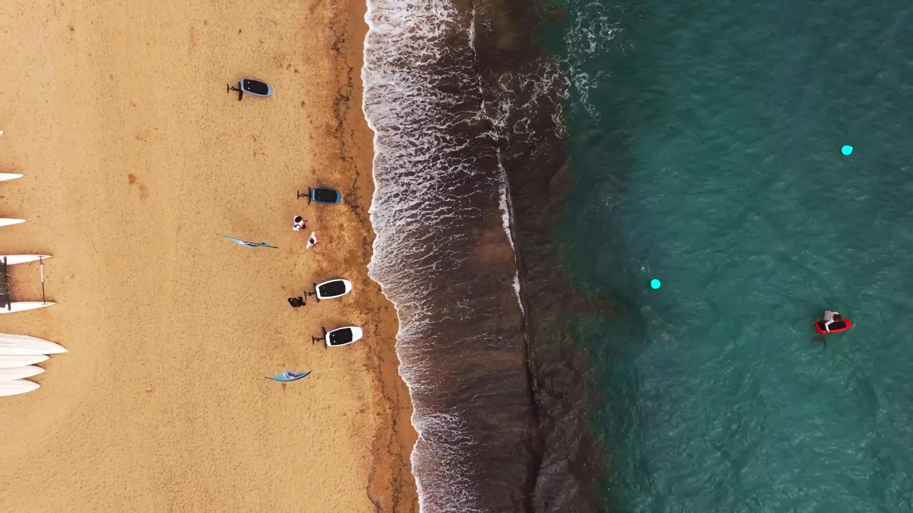
L'expérience
Une fois la vitesse prise, la planche quitte l'eau. Plus de vagues, plus de moteur — la crique défile sous vos pieds.
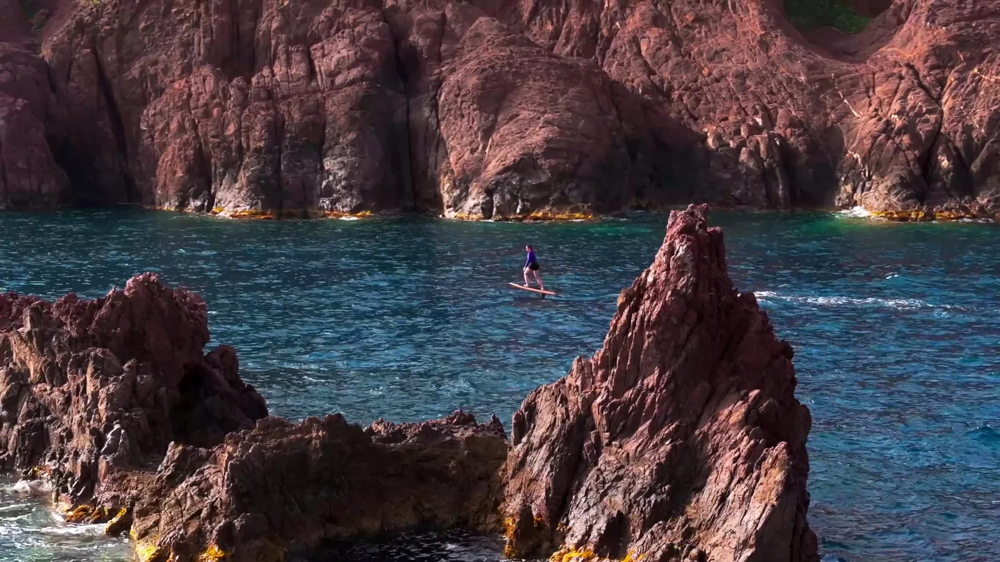
Pas de moteur thermique, pas de sillage bruyant. Le foil électrique Lift vous porte au-dessus de la surface, presque sans un son — au plus près de la réserve.
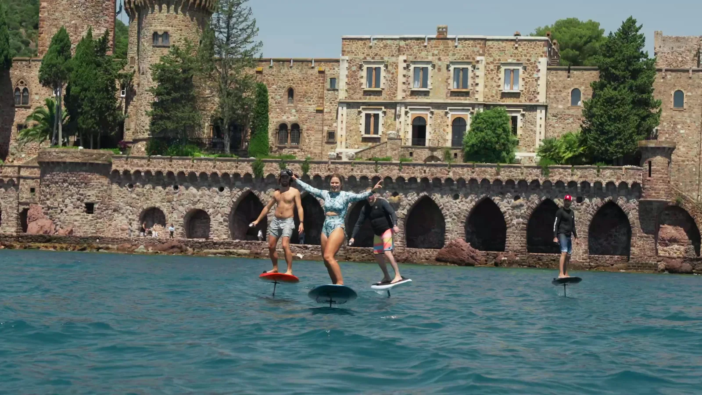
Porté par une aile, à quelques centimètres de l'eau. Lisse, continu, sans effort — la sensation rare de marcher sur une eau que l'on voit jusqu'au fond.
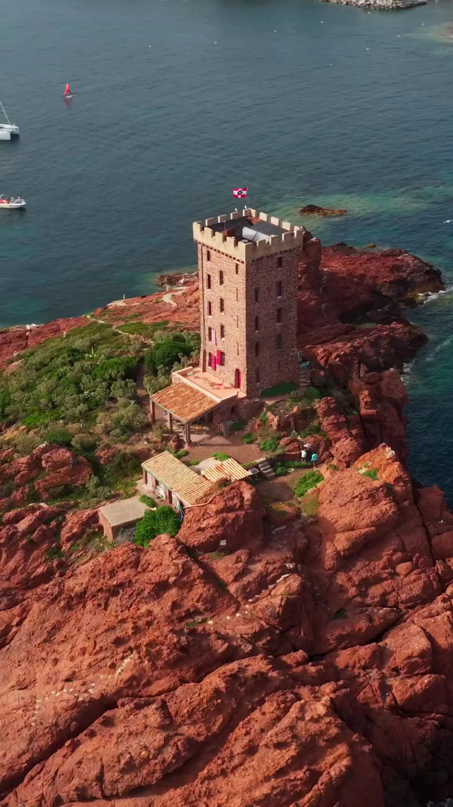
La puissance se règle à la télécommande, progressivement. Les premiers vols viennent souvent dès la première séance, toujours encadrés.
Pour qui
Aucune expérience requise. Un moniteur, un briefing, et une eau abritée idéale pour apprendre. La plupart des riders volent leurs premiers mètres en vingt à soixante minutes.
Vous connaissez le foil ? Partez en session libre le long de la côte, le temps d'une batterie. Les longues lignes face au Cap Lardier laissent de l'espace pour la vitesse.
Gilet, télécommande à coupure automatique, hélice protégée, briefing complet. Un moniteur reste à proximité. La progressivité prime sur la performance.
Des foils électriques Lift, marque pionnière de l'eFoil, en carbone. Conçus pour une glisse douce et un apprentissage accessible.
Galerie
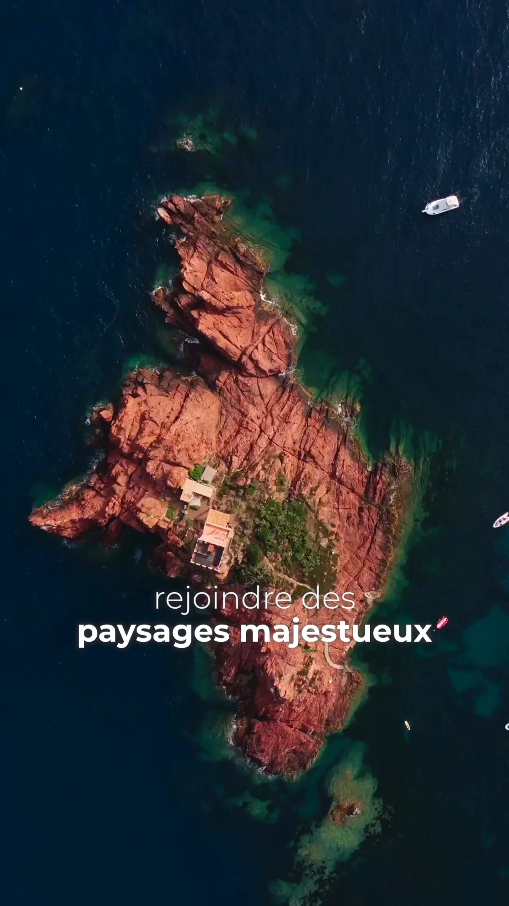
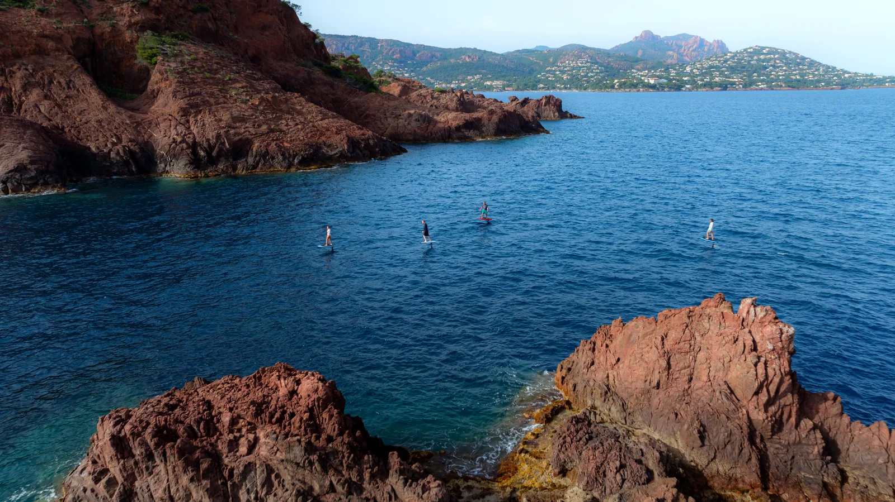
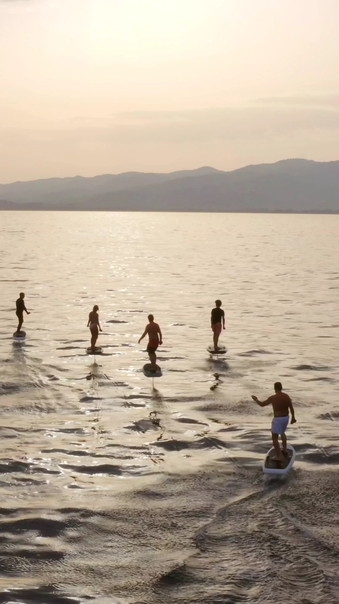
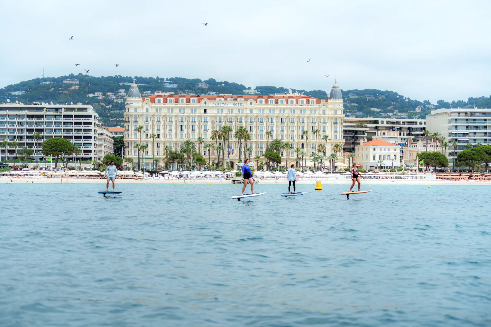
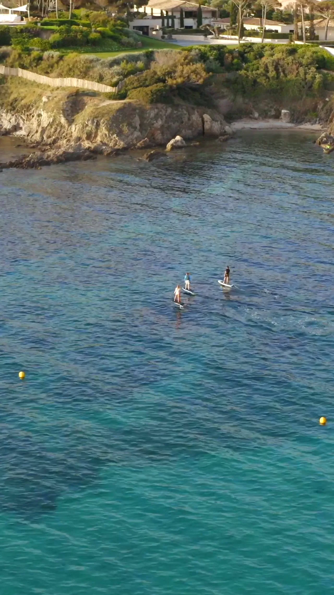
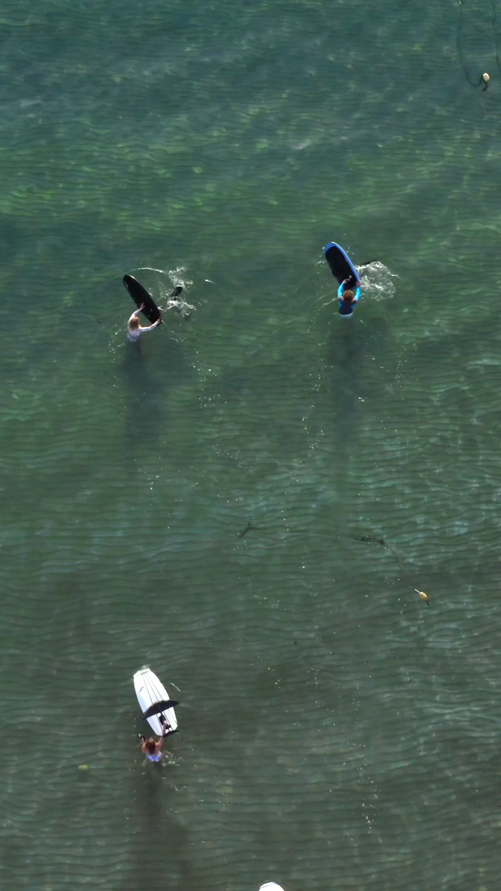
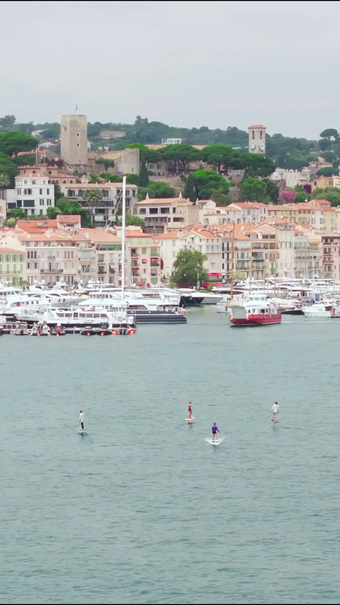
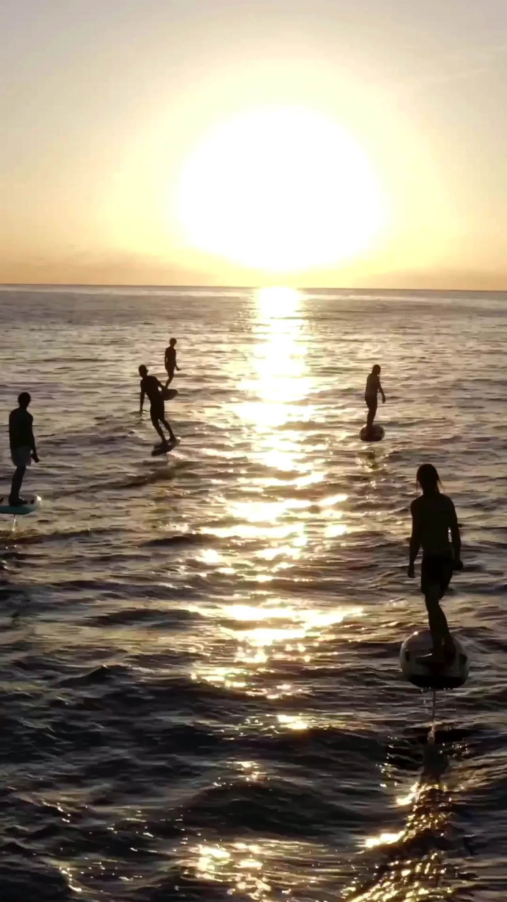
Le déroulé
Sécurité, posture, pilotage à la télécommande. Quelques minutes sur le sable pour partir serein.
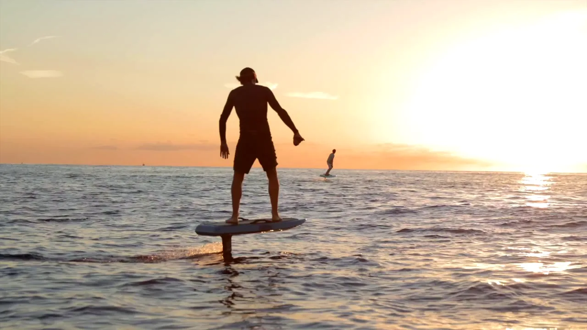
Combinaison si besoin, gilet, télécommande. La board Lift est prête au bord de l'eau.
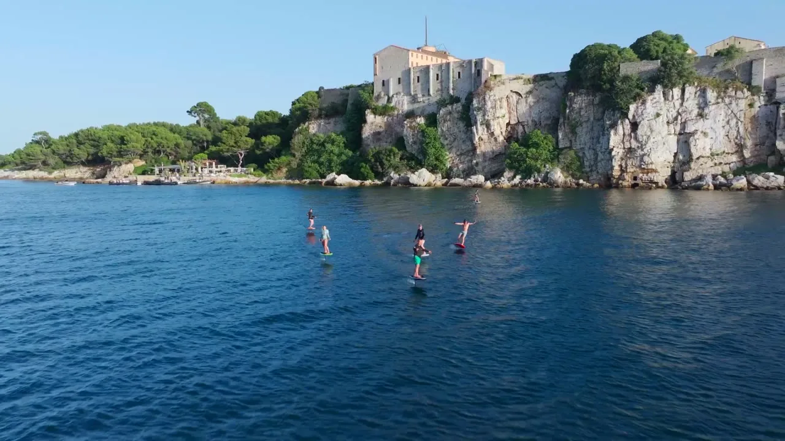
Premiers mètres à plat, allongé puis à genoux. On apprivoise la vitesse, on lance le foil dans les hauts-fonds.
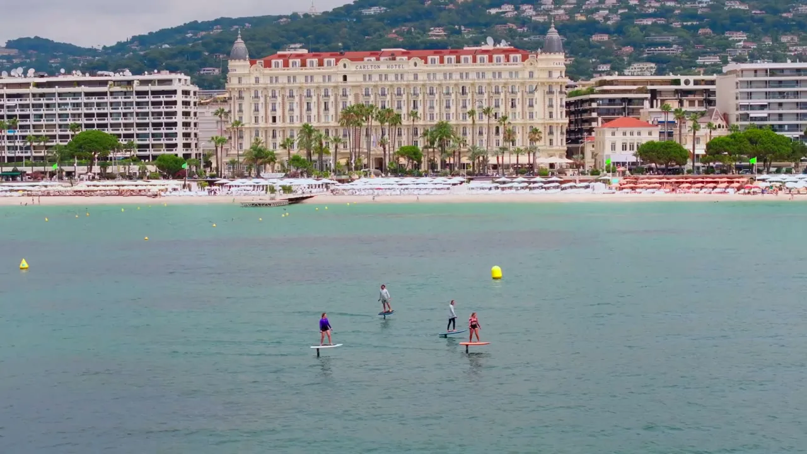
La planche s'élève, le moteur se fait oublier. Vous volez au-dessus de la crique, debout sur l'eau.
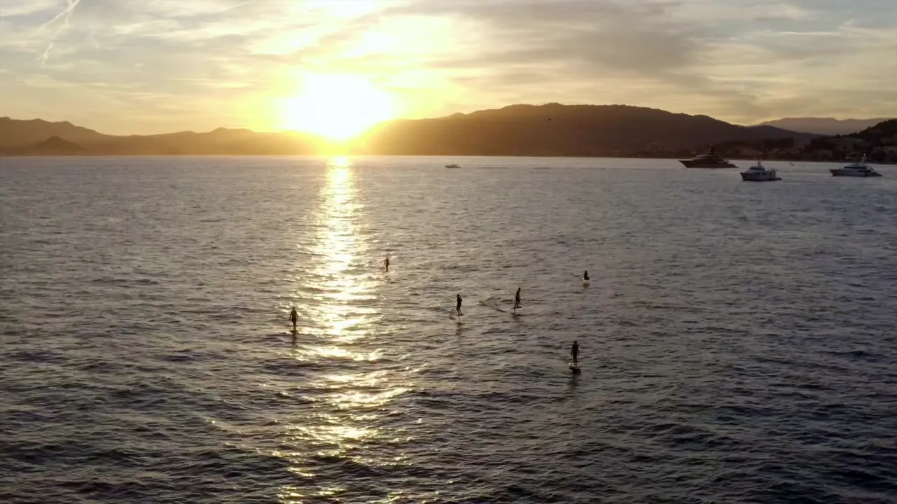
Venir ici
Gigaro, c'est une longue plage de sable, des paillotes et le sentier du littoral qui file vers le Cap Lardier. La session s'y glisse comme une parenthèse : on arrive le matin pour l'eau calme, on vole une heure, on reste pour la journée.
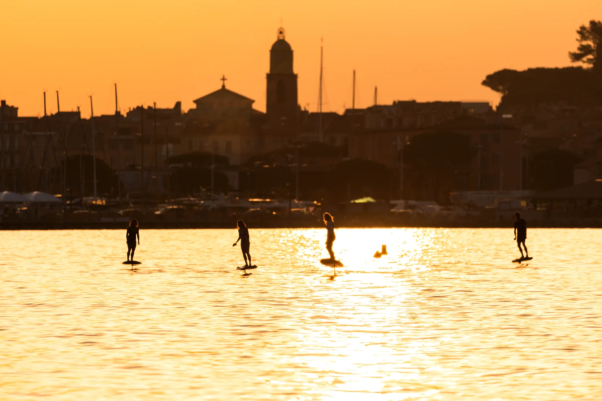
Le coin
La base se rejoint au départ de la plage de Gigaro, à La Croix-Valmer. Parkings à proximité, puis quelques pas sur le sable. On vous indique le point de rendez-vous exact à la réservation.
Ils ont volé
{{NOTE}}/5 · Google
« {{AVIS_1}} — verbatim Google réel à insérer. »
{{CLIENT_1}}« {{AVIS_2}} — verbatim Google réel à insérer. »
{{CLIENT_2}}« {{AVIS_3}} — verbatim Google réel à insérer. »
{{CLIENT_3}}Réserver
Choisissez votre créneau. On s'occupe du reste : matériel, encadrement, et les eaux claires de Gigaro pour vous, le temps d'une session.